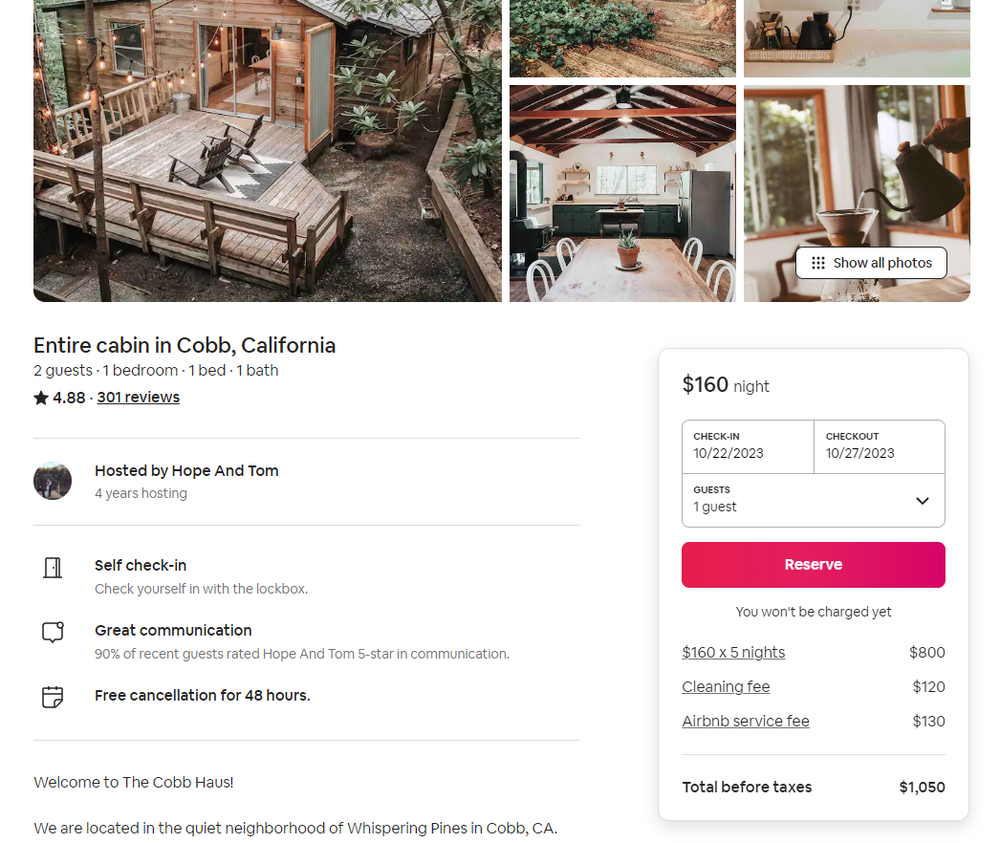

Contrast, Repetition, Alignment, and Proximity
Below, I examine four websites, covering the four essential web design
principles, as titled above.
Contrast
Apple
-
Apple web site showed a great example of “Contrast” by having a black
background.
-
The black and silver camera floating around in the center of the page.
-
The clickable links which bring up more to the menu as you hover over
them, they get brighter.

Repetition
Amazon
-
Amazon has shown great repetition on their website by the way placed
their items in different categories with white backgrounds behind each
one and by having different layers.
- And even the % off was used flush left on each item.
-
The footer categories were set it repetition as well how they
highlighted.
Alignment
Medium
- Why Just the Shop Page?
-
Even by opening the site on your cell phone the site is easy to
navigate.
-
I also like the way that the search menu bar was directly in the
middle of the page.
-
The items on the front page were used with great alignment though out
the website.

Proximity
Airbnb
-
This website Airbnb as you click on map it shows you pictures exactly
where you will be staying.
- I also noticed that it shows you how much you will be spending.
-
This website gives you a map the proximity on the time that you will
be spending at the location.

In Conclusion...
I noticed most websites that I got my examples from actually exhibited
multiple design
elements of the four that we learned in the assignment. It really helps
one realize the
importance of incorporating these into web design.